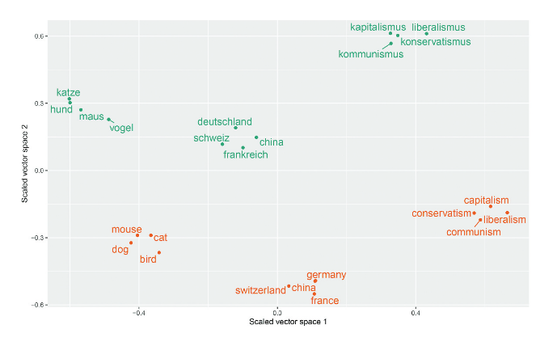

Implicit stigmatization: Example
Die Leute, die häufig in der Shisha-Bar rauchen, sind kriminell.
Adam raucht häufig in der Shisha-Bar.
- Associational statement(s): Textual sentiment associated with the contexts in which a group name is used
- group names (Targets)
- sentiment words (Attributes)
- contextual understanding of where a word is used
Arendt (2013) Dose-Dependent Media Priming Effects of Stereotypic Newspaper Articles on Implicit and Explicit Stereotypes. Journal of Communication doi
Word Embeddings: Contextual understanding
Distributional semantics: words that are used and occur in the same contexts tend to purport similar meanings
Doc 1: Berlin ist die Hauptstadt von Deutschland
Doc 2: Paris ist die Hauptstadt von Frankreich
Doc 3: Tokio ist die Hauptstadt von Japan
Doc 4: Die Katze zählt zu den beliebtesten Heimtieren.
Deutschland, Frankreich, and Japan (but not Katze) should have similar meanings because they are used in the similar contexts
Quantification of distributional semantic meanings of words I

Word embeddings: word vectors capturing the distributional semantic meanings of words in a large corpus of textual content.
The input word embedding \(w\) is a dense \(m\times n\) matrix, where \(m\) is the total size of the vocabulary in the training corpus and \(n\) is the vector dimension size. Let \(v_x\) denote a row vector of \(w\), the word vector of the word \(x\).
Quantification of distributional semantic meanings of words II

The main purpose of sweater is to evaluate associations among words in word embedding spaces.
Semantic association: The distance (e.g. cosine distance) between \(v_{deutschland}\) and \(v_{frankreich}\) should be shorter than \(v_{deutschland}\) and \(v_{katze}\).
\(v_{biden}\) should have shorter distance to \(v_{american}\) than to \(v_{german}\).
Quantification of distributional semantic meanings of words III
Word Embedding bias: Differential unwanted association of a word with two sets of attributes in the word embedding spaces.
\(\mathcal{A} = \{she, daughter, hers, ...\}\). \(\mathcal{B} = \{he, son, his, him, ...\}\)
WARNING!
Word Embedding bias is a corpus-based measurement, i.e. difficult to validate.
Using it to predict some real-life phenomena might provide some evidence of predictive validity, but that’s scientific instrumentalism (Jungherr, Jürgens, & Schoen, 2012).
Not the same as the ordinary (cross-)validation process as in ordinary machine learning procedures.
query
We use the concept of query to look for biases.
A query requires two sets of words: Target words (\(\mathcal{S}\), \(\mathcal{T}\)) and Attribute words (\(\mathcal{A}\), \(\mathcal{B}\)).
Target words (\(\mathcal{S}\), \(\mathcal{T}\)) should have no bias.
Attribute words (\(\mathcal{A}\), \(\mathcal{B}\)) are attributes in relation to the bias.
| Mean Average Cosine Similarity |
\(\mathcal{S}\) |
\(\mathcal{A}\) |
| Relative Norm Distance |
\(\mathcal{S}\) |
\(\mathcal{A}\), \(\mathcal{B}\) |
| Relative Negative Sentiment Bias |
\(\mathcal{S}\) |
\(\mathcal{A}\), \(\mathcal{B}\) |
| SemAxis |
\(\mathcal{S}\) |
\(\mathcal{A}\), \(\mathcal{B}\) |
| Normalized Association Score |
\(\mathcal{S}\) |
\(\mathcal{A}\), \(\mathcal{B}\) |
| Embedding Coherence Test |
\(\mathcal{S}\) |
\(\mathcal{A}\), \(\mathcal{B}\) |
| Word Embedding Association Test |
\(\mathcal{S}\), \(\mathcal{T}\) |
\(\mathcal{A}\), \(\mathcal{B}\) |
Example: Garg et al.
Gender biases of occupation words in the pretrained Google News Word Embeddings
require(sweater)
S1 <- c("janitor", "statistician", "midwife", "nurse",
"engineer", "teacher", "author", "secretary", "soldier")
A1 <- c("he", "son", "his", "him", "father", "man", "boy", "himself",
"male", "brother", "sons", "fathers", "men", "boys", "males",
"brothers", "uncle", "uncles", "nephew", "nephews")
B1 <- c("she", "daughter", "hers", "her", "mother", "woman", "girl",
"herself", "female", "sister", "daughters", "mothers", "women",
"girls", "females", "sisters", "aunt", "aunts", "niece", "nieces"
)
query(googlenews, S_words = S1, A_words = A1, B_words = B1)
Plot
require(sweater)
S1 <- c("janitor", "statistician", "midwife", "nurse",
"engineer", "teacher", "author", "secretary", "soldier")
A1 <- c("he", "son", "his", "him", "father", "man", "boy", "himself",
"male", "brother", "sons", "fathers", "men", "boys", "males",
"brothers", "uncle", "uncles", "nephew", "nephews")
B1 <- c("she", "daughter", "hers", "her", "mother", "woman", "girl",
"herself", "female", "sister", "daughters", "mothers", "women",
"girls", "females", "sisters", "aunt", "aunts", "niece", "nieces"
)
garg_f1 <- query(googlenews, S_words = S1, A_words = A1, B_words = B1)
plot(garg_f1)
Example: ICA abstracts (ECT: Embedding Coherence Test)
Are there pro R or Pro Python biases in ICA 2022 abstracts.
require(sweater)
ica_program_wm <- readRDS("~/dev/sweater/paper/tooldemo2022/data/ica_program_wm.RDS")
S_words <- c("analysis", "analytic", "computation", "computational", "analyses", "research",
"computer", "computers", "vision", "statistics")
A_words <- c("r")
B_words <- c("python")
x <- query(ica_program_wm, S_words = S_words, A_words = A_words, B_words = B_words, method = "rnsb")
plot(x)
Word Embedding Association Test (Caliskan et al., 2017)
Word Embedding Association Test (WEAT) requires all four wordsets of \(\mathcal{S}\), \(\mathcal{T}\), \(\mathcal{A}\), and \(\mathcal{B}\). The method is modeled after the Implicit Association Test (IAT) and it measures the relative strength of \(\mathcal{S}\)’s association with \(\mathcal{A}\) to \(\mathcal{B}\) against the same of \(\mathcal{T}\).
require(sweater)
S <- c("math", "algebra", "geometry", "calculus", "equations", "computation",
"numbers", "addition")
T <- c("poetry", "art", "dance", "literature", "novel", "symphony", "drama",
"sculpture")
A <- c("male", "man", "boy", "brother", "he", "him", "his", "son")
B <- c("female", "woman", "girl", "sister", "she", "her", "hers", "daughter")
sw <- query(glove_math, S, T, A, B)
sw
Effect Size and Statistical Test
The effect size can also be converted to point-biserial correlation coefficient.
require(sweater)
S <- c("math", "algebra", "geometry", "calculus", "equations", "computation",
"numbers", "addition")
T <- c("poetry", "art", "dance", "literature", "novel", "symphony", "drama",
"sculpture")
A <- c("male", "man", "boy", "brother", "he", "him", "his", "son")
B <- c("female", "woman", "girl", "sister", "she", "her", "hers", "daughter")
sw <- query(glove_math, S, T, A, B)
sw
calculate_es(sw, r = TRUE)
Statistical test
require(sweater)
S <- c("math", "algebra", "geometry", "calculus", "equations", "computation",
"numbers", "addition")
T <- c("poetry", "art", "dance", "literature", "novel", "symphony", "drama",
"sculpture")
A <- c("male", "man", "boy", "brother", "he", "him", "his", "son")
B <- c("female", "woman", "girl", "sister", "she", "her", "hers", "daughter")
sw <- query(glove_math, S, T, A, B)
sw
weat_resampling(sw)
Use it now
install.packages("sweater")
remotes::install_github("chainsawriot/sweater")
Citation:
Chan, C., (2022). sweater: Speedy Word Embedding Association Test and Extras Using R. Journal of Open Source Software, 7(72), 4036, https://doi.org/10.21105/joss.04036
Funding
The development of this package was supported by the Federal Ministry for Family Affairs, Senior Citizens, Women and Youth (Bundesministerium für Familie, Senioren, Frauen und Jugend), the Federal Republic of Germany – Research project: “Erfahrungen von Alltagsrassismus und medienvermittelter Rassismus in der (politischen) Öffentlichkeit”.